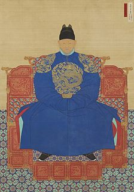

- 조선왕족
- 조선왕족 실록
- 임진왜란
- 대한제국
1392년 즉위한 태조(太祖) 이성계에서 1910년 마지막 임금인 순종(純宗)에 이르기까지 27명의 왕이 승계하면서 518년간 지속되었다.(HTML)
14세기 후반에 이르러 고려왕조는 권문세족(權門勢族)이 발호하는 가운데, 정치체제가 약화되고 왕권이 쇠퇴하였으며, 밖으로는 이민족(異民族)의 침입이 계속되는 등, 혼란을 거듭하였다. 이러한 때에 이성계는 여진족(女眞族)·홍건적(紅巾賊) ·왜구 등을 물리쳐 명성을 높이며 중앙정계에 진출, 조준(趙浚)·정도전(鄭道傳) 등의 신진사대부와 손을 잡고, 위화도회군(威化島回軍)을 단행하여 구세력인 최영(崔瑩) 일파를 숙청하고, 또 전제개혁(田制改革)을 단행하여 경제적 기반을 마련하였다. 마침내 1392년 7월 16일 개성의 수창궁(壽昌宮)에서 선양(禪讓)의 형식으로 왕위에 올라 나라를 개창하니, 이를 역성혁명(易姓革命)이라고도 한다.
[네이버 지식백과] 조선 [朝鮮] (두산백과)
